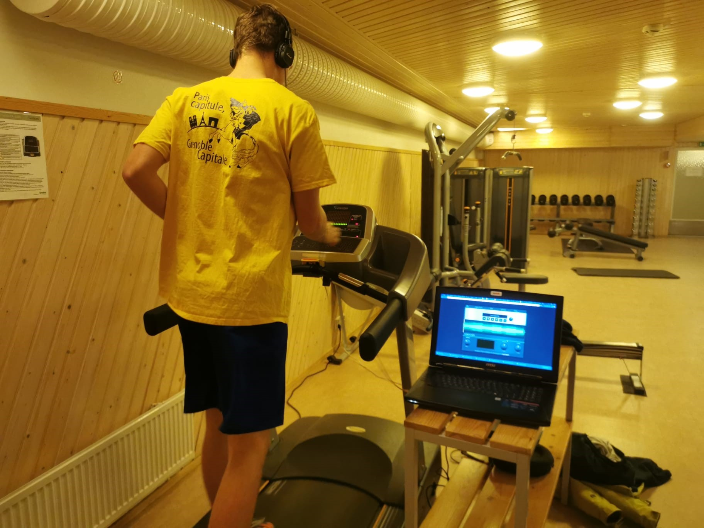

CONTEXT
InnoEvent is a 6-day design sprint event that gather over a thousand student from different universities and backgrounds. Students are grouped by the event members and a topic is presented. By the end of the week, a solution must be provided. The solution is presented in a cinema, in front of an audience and the best team of each topic is awarded with recognition and an economic prize.
PROBLEM
When runners use a sport watch for heart rate feedback, users must lose visual attention on the environment to look at the displayed visual feedback on the sport watch. This can be dangerous, as some tracks are visual demanding, and this visual heart rate feedback method can lead to injuries.
Based on previous literature studies, a new feedback solution was designed to avoid losing the attention on the environment. It was hypothesized that this new solution would provide a better user experience and performance while running, compared to the other studied methods.

TEAM & ROLE
I was responsible for all the aspects of the project. I performed as sole UX researcher, designer and usability tester. However, I had the collaboration of two UX designers: Maija Hautere, who is also a Usability Specialist at Polar Electro Oy; and Karoliina Tiuraniem, who is also a Global Product Marketing Manager at Suunto. There has also been the collaboration of Laia Planella, a physical educator professional; and Albert Juanola, a music producer.
METHODOLOGY & SOLUTION
The first step of the project has been to get familiar and gain knowledge on the topic. Thus, an extensive literature review of previous work and studies has been made. This background research phase has been complemented with field research, which had as a main source of information the interview of two professional sport watch UX designers.
Learnings showed that music could strongly affect sport performance and that was a key aspect for user experience in sport. With these insights and other human and technical aspects to consider, it has been decided to design an adaptative music feedback that would guide the user to the correct heart rate.
Different rounds of iterative trial and error have been conducted. Together with the help of a music producer and following the learnings of the research phase, the adaptative music has been created: with the different phases, tempos, ecosignals and the possibility to modify the tempo without a negative musical perception.

To evaluate the proposed solution, it has been compared to two other feedback solution. One has been another music solution described in previous studies: a solution based on familiar music. The second one, used as a baseline, has been a sport watch with visual feedback. For this comparation study the technique of “The wizard of Oz” was used with both music feedback solutions.
THE USER TESTS & RESULTS
The user tests had three phases. The first one was the pilot test, from which we learned how to test for this project. After this, we had 2 rounds of user testing, one exterior and one interior, on a treadmill. To measure the heart rate, the polar H10 heart rate chest band was used.
After the user tests, we had two sets of data, quantitative and qualitative. To determine the significance of quantitative data, a 1-way repeated measures ANOVA has been performed.
ANOVA SPSS table report: “One-way within-subjects ANOVA did not show a statistically significant effect of the feedback method, F(2, 10) = .68, p = .529.”
Quantitative data showed that there was no significant difference in the performance between previous studies solution and the new proposed solution.
However, with the qualitative data (interviews and questionnaires) we could know that the new solution provided a better user experience in the treadmill condition (with no visual feedback), but worse in the exterior condition (with visual feedback).
CHALLENGES
Doing all the stages of the process by myself and in the context of sport, which was new for me, has been a big challenge. As any thesis project I had some steps and guides which I could follow, but as the topic was my own, I had to discover and explore the possibilities of UX in this concrete topic.
During user test, one of the main concerns was to design both exterior and interior tests without risking the health of the participants. This required of some rounds of pilot testing.
Another challenge was the exterior test itself, as it was based on difficult terrains and could not be performed in athletic tracks. The only way to have visuals of the test was running behind or next to the participant, without interfering in the test.
OUTCOME
From the project we can understand that the new solution provides a better experience when no other feedback method is possible. But, when possible, the experience that familiar music provides is much enjoyable.
Yet the hypothesis did not turn out to be completely true, it gave many insights on future lines of work in this field and a variety of possible improvements, such as considering haptic feedback in the solution.
Even though all the stages of the thesis have been completed, the project is still ongoing, as the final report will be delivered on September to Tampere University. On the same month, the results will be presented to Polar and Suunto companies.
LEARNINGS
With this project I had a holistic view of a UX Research and design project. I learned the importance of properly designing the user testing in sport conditions. It made me test repeated times both the design solution and the user test, following agile development techniques. It made me confident in user test conditions and on how to acquire and report quantitative and qualitative data.
It also thought me the importance of gaining knowledge to improve and continue previous work, avoiding a repetition of mistakes and saving time.